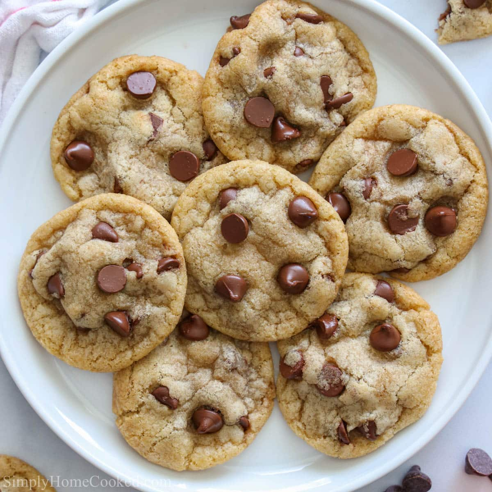

Chocolate Chip Cookies

Description
This cookie is a little bit dense and chewy in the middle because it's slightly underbaked. It's a little crispy on the edges and yet it's soft in the middle. It's noticeably flavored with brown sugar and pure vanilla extract, it's full of gooey chocolate chips and finished with a touch of flaky sea salt.
Ingredients
- one half cup (113g) unsalted butter, melted
- one half cup (55g) light brown sugar, packed
- one quarter cup (48g) granulated sugar
- one large egg
- two teaspoons (10mL) pure vanilla extract
- one and a quarter cups (175g) all-purpose flour
- one half teaspoon salt
- one quarter teaspoon baking soda
- three quarters cup (135g) chocolate chips
- flaky sea salt
Steps
- Preheat the oven to 350°F. Line a baking sheet with parchment paper or use a silicone baking sheet.
- Melt the butter in a microwave-safe bowl for 30-45 seconds. Allow to cool for a few minutes. Combine the melted butter with the brown and granulated sugar. Beat on medium speed until well combined, 2-3 minutes.
- Next add the egg and vanilla extract and continue beating until well incorporated.
- In a separate bowl, combine the flour, salt and baking soda. Stir to combine and slowly add the dry ingredients into the dough, mixing on low speed until dough starts to form. As the dough thickens, add the chocolate chips. Beat until incorporated.
- Using large cookie scoop, scoop the dough onto baking sheet, placing 2 inches apart. Sprinkle with flaky sea salt.
- Bake for 9-11 minutes. The center of the cookies should be slightly under baked but not too gooey. Allow to cool on the baking sheet for 10 minutes before transferring to a wire rack to cool.